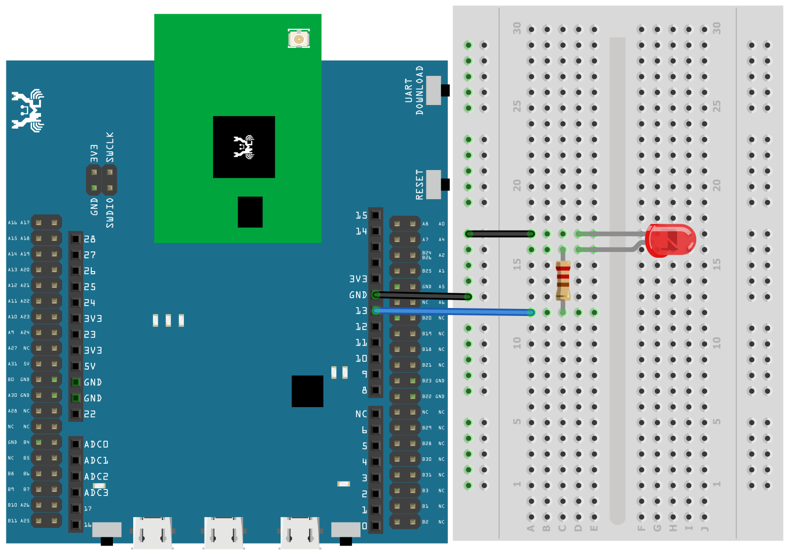
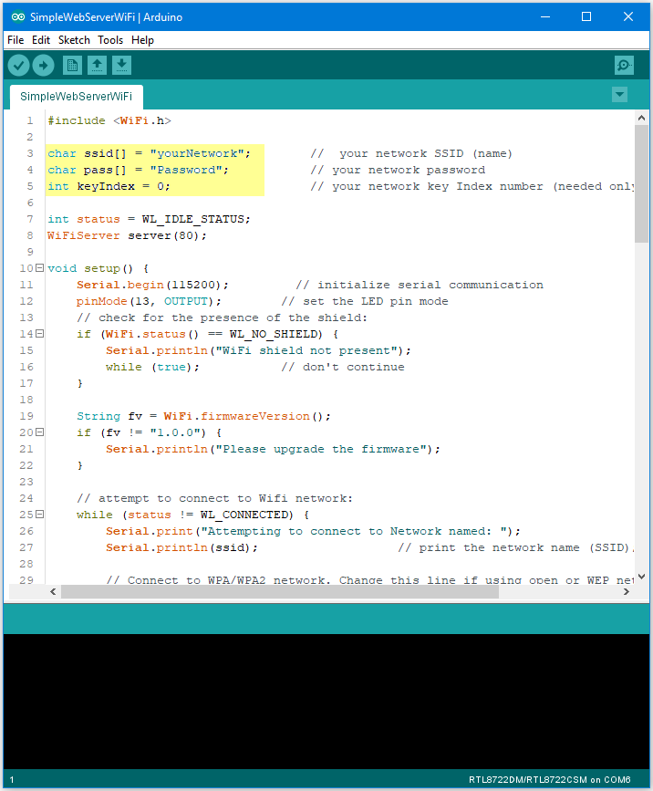

[RTL8722CSM] [RTL8722DM] Use Ameba as Server to control LED
Materials
Ameba x 1
Breadboard x 1
LED x 1
1KΩ Resistor x 1
Procedure
In this example, we connect Ameba to WiFi and use Ameba as server, the
user can control the LED on/off through a webpage.
First, connect Ameba with the LED.
In a LED, the longer pin is the positive pole, and the shorter pin is
the negative pole. So, we connect the shorter pin to GND and connect the
longer pin to D13. Additionally, to avoid the electric current exceeds
the tolerance of the LED and causes damage, we connect a resistance on
the positive pole.

Then open “File” -> “Examples” -> “AmebaWiFi” ->
“SimpleWebServerWiFi”

In the sample code, modify the highlighted snippet to corresponding
information.

Upload the code and press the reset button on Ameba. When the connection
is established, you will see the message “To see this page in action,
open a browser to http://xxx.xxx.xxx.xxx” in the Arduino IDE, as shown
in the figure:

Next, open the browser of a computer or a cell phone under the same WiFi
domain, enter the address in the message.
In the webpage, you can turn on/off the LED.
Code Reference
Use WiFi.begin() to establish WiFi connection.
To get the information of a WiFi connection:
Use WiFi.SSID() to get SSID of the current connected network.
Use WiFi.RSSI() to get the signal strength of the connection.
Use WiFi.localIP() to get the IP address of Ameba.
Use WiFiServer server() to create a server that listens on the
specified port.
Use server.begin() to tell the server to begin listening for incoming
connections.
Use server.available() to get a client that is connected to the server
and has data available for reading.
Use client.connected to get whether or not the client is connected.
Use client.println() to print data followed by a carriage return and
newline.
Use client.print() to print data to the server that a client is
connected to.
Use client.available() to return the number of bytes available for
reading.
Use client.read() to read the next byte received from the server the
client is connected to.
Use client.stop() to disconnect from the server the client is
connected to.
{kind=link}
{kind=link}
{kind=link}